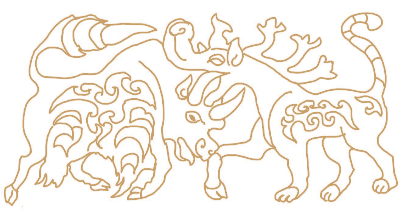
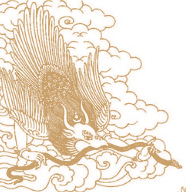

Pillar 1 in Practice — Rangeland Monitoring
12 Points, Quarterly, Route-Optimized
Need more points to be monitored, plus on state-programmed points. Each quarter: grass density, height, and plant-count measurements, plus a sample collected for lab nutrient analysis.
4×/yr
Cooperative organized — herder-led quarterly monitoring and samplings
Methodology, aligned to NAMEM national standard
- Line-point intercept
- Gap intercept
- Air-dry biomass clipping
- Photo points (repeat, fixed angle)

Map & Coordinates of the 12 Monitoring Points
Round trip ~340 km · MP1 → MP10 → MP12 → MP11 → MP1
| # | Monitoring Point | Latitude | Longitude |
|---|
| 0 | Office (province centre) | 46.682048° N | 113.277743° E |
| 1 | Ikh shand | 46.718736° N | 114.184104° E |
| 2 | Dund Khulst | 46.781130° N | 114.282903° E |
| 3 | Burd | 46.780486° N | 114.475513° E |
| 4 | Tsagaan Ders | 46.695319° N | 114.512951° E |
| 5 | Tsagaan Temeet | 46.748560° N | 114.679164° E |
| 6 | Durvuljin Khudagiin Gobi | 46.653221° N | 114.755007° E |
| 7 | Khavirga tsagaan ders | 46.538150° N | 114.821240° E |
| 8 | Khadan Mankhan | 46.494060° N | 114.807471° E |
| 9 | Tarangiin Khundii | 46.499120° N | 114.655950° E |
| 10 | Uneet | 46.484960° N | 114.484450° E |
| 11 | Tsuv | 46.443480° N | 114.293440° E |
| 12 | Bayangol | 46.632320° N | 114.357010° E |
Pillar 1 in Practice — Sand Encroachment
Two Active Sand Sites, Mapped and Planned
Site 2 — Enger Khulst (2.22 ha)
4-row windbreak — perimeter shelterbelt
- Row 1: Outer shrubs — Caragana korshinskii
- Row 2: Medium shrubs — Sea buckthorn
- Row 3: Deciduous trees — Siberian elm
- Row 4: Fast-growing canopy — Poplar
Spacing: 1.5m between rows · 2.0m in-row.
Total planting quantity (to be phased): ~5,200 Caragana/shrubs · ~4,300 Siberian elm/poplar · ~9,500 total plants
Biodiversity
Feather grass steppe, native gazelle range; corridors kept open.
Pillar 2 in Practice — Water Source Protection
Protect the Water, Break the Disease Pathway
One pillar, $50k in grants · a healthier ecosystem at the two highest-risk sources.
Pillar 2 — Water Source Protection
Problem: most small rivers and lakes are dry and need protection. Stagnant, non-flowing water is also the primary sharing point for disease transmission between herds.
Action: concentrate protection on the 2 highest-usage, highest-risk sources; river (Bayangol) and lake (Bukht) names to be confirmed locally.
$50k grant
| # | Rivers & Lakes |
|---|
| 1 | Tugal bulag |
| 2 | Naran bulag |
| 3 | Havirga bulag |
| 4 | Hajuu bulag |
| 5 | White lake |
| 6 | Buural Khutul lake |
| 7 | Bayangol river |
| 8 | Ar bulag |
| 9 | Mukhar shiree lake |
| 10 | Enger Khulst lake |
| 11 | Khoroolol Great White lake |
Pillars 3–5 in Practice — The Livestock Layer
Better Genetics, Healthier Animals, Feed That Depressurizes Pasture
Three pillars, $195k in grants · the livestock layer that turns pasture recovery into higher-value animals.
Pillar 3 — Breeding
Problem: quantity has been prioritised over quality, stalling genetic gain.
Action: ratio-based rams and bucks, one per 50 breeding females, phased in.
$72k grant
Pillar 4 — Veterinary
Problem: five disease threats, foot-and-mouth among them.
Action: GAP training — sanitation, dipping, deworming — plus the Pillar 2 water fix.
$30k grant
Pillar 5 — Organic Feed
Problem: lost plant diversity leaves animals mineral-deficient in winter.
Action: mineral and concentrate supplement for 10% of the confirmed herd (6,863 head).
$93k grant

Pillar 6 in Practice — Factory Construction Status
Approved Design, Under Construction with Herder Investment
Functional Areas (650 m²)
- Livestock slaughtering — 211 m² ✓
- By-product processing — 115 m² ✓
- Meat cooling — 54 m²
- Frozen storage warehouse
- Common utility & service area
✓ = fully complete; remaining sections at 100% foundation
Estimated Budget
$623K
Officially approved engineering design; ~30% of total project investment achieved to date.
Operational Capacity at Full Run
Per hour: 20 small livestock / 5 large livestock
Per day: 160 / 40
Per year: 29,120 / 7,280
Pillar Spotlight — Loan-Funded
The Factory: Where Wellness Becomes Income — Engine of the System
Healthier pasture and better-bred animals only matter if herders can actually capture the value. This is what the factory does — and unlike the pillars before it, it isn't a plan. It's already built, with the cooperative's own capital. 100% Natural ECO FOOD PRODUCTION from conserved rangeland eco-system, well-cared healthy livestock. Zero-waste meat, cashmere, wool & offal processing — slaughter-line rails, stunning equipment, and core machinery already installed.
Sukhbaatar site — machinery installed / conveyor with rangeland behind it